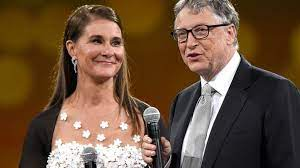
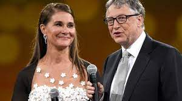

BACK GROUND INFORMATION OF ELON MUSK
It was at Lakeside School where Bill met Paul Allen, who was two years his senior. The
two became fast friends, bonding on their common enthusiasm over computers, even though they
were very different. Allen was more reserved and shy. Bill was feisty and at times combative.
They both spent much of their free time together working on programs. Occasionally, they
disagreed and would clash over who was right or who should run the computer lab. On one
occasion, their argument escalated to the point where Allen banned Gates from the computer lab.
On another occasion, Gates and Allen had their school computer privileges revoked for taking
advantage of software glitches to obtain free computer time from the company that provided the
computers. After their probation, they were allowed back in the computer lab when they offered
to debug the program. During this time, Gates developed a payroll program for the computer
company the boys hacked into, and a scheduling program for the school.
In 1970, at the age of 15, Bill Gates went into business with his pal, Paul Allen. They
developed "Traf-o-Data," a computer program that monitored traffic patterns in Seattle, and
netted $20,000 for their efforts. Gates and Allen wanted to start their own company, but Gates'
parents wanted him to finish school and go on to college where they hoped he would work to
become a lawyer.
Bill Gates graduated from Lakeside in 1973. He scored 1590 out of 1600 on the college
SAT test, a feat of intellectual achievement that for several years he boasted about when
introducing himself to new people.
| PLACE |
Name and wife |
position |
companies |
interval and Year |
| CEO |
Elon Musk |
First |
Tesla |
300.8billion |
2021 |
| Justine Musk |
Wife |
Wife |
Teacher |
2016-2021
|
| CEO |
Jef Bezos |
Second |
Amazon |
192 billion |
2021 |
| Mchenzie Scott |
Wife |
Wife |
Philantropist |
1993-2019
|
| CEO |
Bernard Alnauid |
third |
Louis Vitoux |
168 billion |
2021 |
| Helena |
wife |
wife |
Pianist
| Since 1991 |
| CEO |
Bill Gate |
fouth |
Microsoft |
131billion |
2021 |
| Melinda Gate |
Wife |
Wife |
Melinda foundation |
1994-2021
|
| CEO |
Larry Ellison |
fith |
Oracle |
123.1 billion |
2021 |
| Adda Quinn |
Wife |
Wife |
business women |
1967-1974
| CEO |
larrypage |
sixth |
google |
110bilion |
2021 |
| moment |
wife |
wife |
business |
since |
|
|
 


The above list is top 5 richest person in the worlds with his wife and simple discription of their companies
first is Elon Musk with Christine Musk,
The second is Jeff Bezos with his wife Machenzie Scott,
The third is Bernard Arnaound and his wife Helena,
Thr fouth is Billi Gate and his wife Mellinda Gate,
The last is Larry Ellison and his wife Ada Quiin.